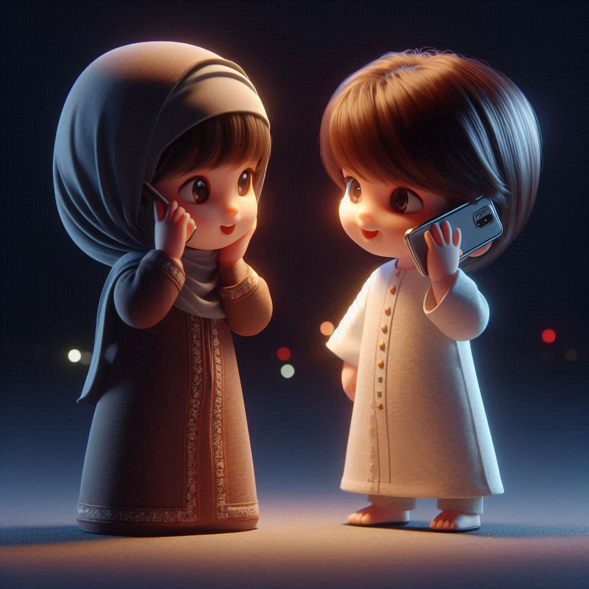
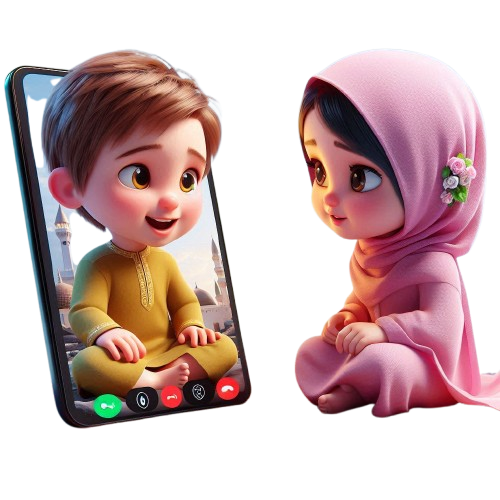
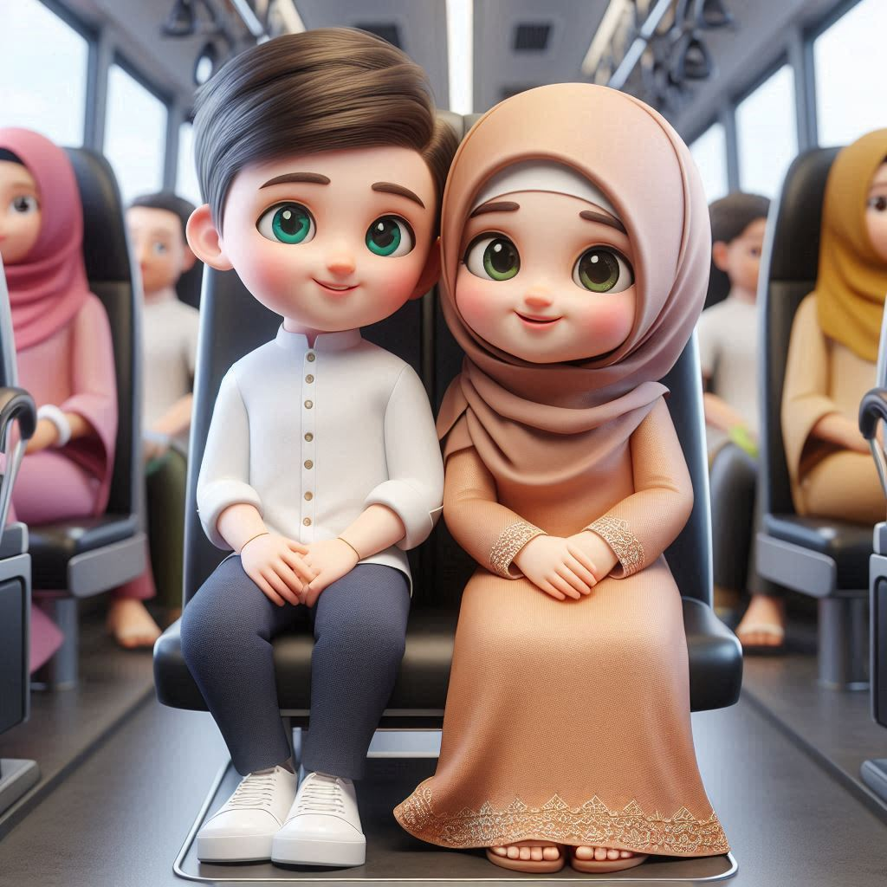
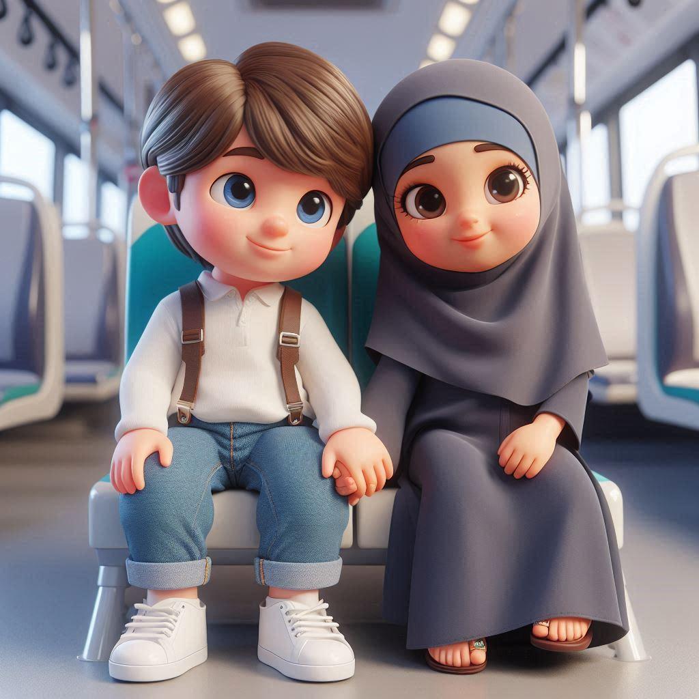

Our meeting is the beginning of love
Our love is the beginning of happiness
Our happiness is simply being together
Our love journey
-
we sent a message on Telegram for the first time, and unexpectedly, we met.And when I asked her where you lived, she said, "Chenab Valley." That's how our conversation started.
27... Jan... 2024 -
When you sent me your first picture, it was visible to me for only 3 seconds before it disappeared. Trust me, when I saw you, the first word that came to my mind was "Mashallah," because you looked so beautiful. At that moment, I wished time could stop so I could admire you for longer
15 ... March ... 2024 -
when you first used the word "zuuu," I wasn't familiar with it, so I asked my friend for its meaning, and I was very happy.
21 ... March ... 2024 -

The first time when I called you late at night, around 2 AM, my heartbeat was racing. Prior to that, we had usually communicated through voice notes. The next day, I was shocked when you told me that you had been talking in your sleep.But it was really a sweet moment for me.
12 ... April ... 2024 -
when I texted you on WhatsApp, I was really scared because I didn't want anyone else to see my message. I was concerned that someone might spoil your dignity,honour or say something about your reputation. However, when you told me that you had both WhatsApp accounts on your phone, I felt relieved.
26 ... April ... 2024 -
you saw me for the first time when I sent a group picture to you. I was amazed that you recognized me among 70 students, even though the picture was quite blurred. It was truly a happy moment for me
15 ... June ... 2024 -
I sent you a solo picture of myself, and after about four months, you finally saw me clearly. I remember that it was during Eid.
17 ... June ... 2024 -

we had our first video call at around 2 AM. You had just woken up from some bad dreams and were feeling scared in the dark room. At that moment, I felt incredibly shy; my eyes darted around nervously because I didn’t have the courage to hold your gaze. It was my first time video calling you, and the thrill of the moment made my heart race.
21 ... June ... 2024 -
we met for the first time in the orthopedic ward at GMC Jammu. I spotted you running ahead of me, and then you suddenly turned left. As I entered the ward, my heart raced with excitement. In that instant, it felt as though time had frozen; I was staring into your eyes. I began to follow you as you walked with your friend, and I still remember your text, "Itna slow 🥺." It was a truly enchanting moment for me.
28 ... July ...2024 -
I had the pleasure of tasting your food for the first time: delicious chicken rice, firni, and a full box of dark fantasy. I felt so happy sharing that meal with you, and I absolutely loved the chicken. However, I regretted not trying the firni, as it ended up spoiling. It was a bittersweet moment,
01 ... AUG ... 2024 -
I finally received the beautiful calligraphy,It was priceless and very precious gift for me and I was delighted by the mango shake you made for me. You handed me two cups: one with the refreshing mango shake and the other with bottlegourd and firni. Your thoughtfulness shone through, especially since the firni had spoiled last time. Each sip and bite was a reflection of your love and care, just like a mother.
05 ... Aug ... 2024 -

In the soft light of the morning, we proposed to each other for the first time. It was such a surprising moment for me, and I felt an overwhelming happiness that I can hardly put into words. My heart was racing, filled with joy and excitement. It was truly a special moment that I will never forget.
25 ... Aug ... 2024 -

we traveled together for the first time, and I was overwhelmed with nervousness and shyness. Time seemed to fly by, and in those fleeting moments, I found myself wishing it could all pause so I could fully embrace the joy of being with you. That day made me realize how deeply I want to spend my entire life by your side.
10 ... Sept ... 2024 -

The first time I touched your hand was on September 12, but it was on October 28 that I truly held your hand. That day, I felt as if I had stepped away from the world; all my tiredness and worries faded away, and the only thing that mattered was you. Time seemed to fly by as I played with your hand, and I couldn’t help but notice how cute your hands are. All I wanted was to hold them forever, lost in the magic of that moment.
28 ... oct ... 2024 -
On November 23, I was thrilled to prepare for my favourite person's birthday. I wanted to surprise her with a cake and decided to order a chocolate truffle cake. I had been looking forward to this day since February 3, when you had planned to order a cake for me, but heavy snowfall prevented that from happening. That day I decided be the first to order a cake for you on your special day, and I was genuinely excited about this gesture.
23 ... Nov ... 2024 -
On November 29, Friday, after returning to my room from prayer, I was filled with excitement because stethoscope had finally arrived. I had been eagerly anticipating this moment for a long time, as I wanted to see your smile and happiness when you unboxed the parcel. I found myself continuously watching your face, and I realized that I was even more excited than you were. That day brought me immense joy.
29 ... Nov ... 2024 -
Today, my heart is overflowing with joy because you made eight aloo parathas just for me. I was so excited that I skipped breakfast, eagerly anticipating the moment I could enjoy your delicious creation. When you fed me the parathas for the first time, it felt magical; I wished time could pause so I could savor that beautiful moment with you forever. Each bite was a revelation—so delicious and flavorful, unlike any I had ever tasted before. I cherish that intimate experience and feel incredibly happy, knowing that it was shared with you.
02 ... Dec ... 2024
A few messages
YYou are my best teacher, guiding me through life even though I was a short-tempered at times. Yet, your love remains unwavering. You take care of me like a mother, showering me with love and care, and yes, even scolding me when necessary. I appreciate everything you do, and I want you to know how much I love you ❤️.
You are incredibly important to me, and you are my top priority. You are not just someone I love; you are my family.